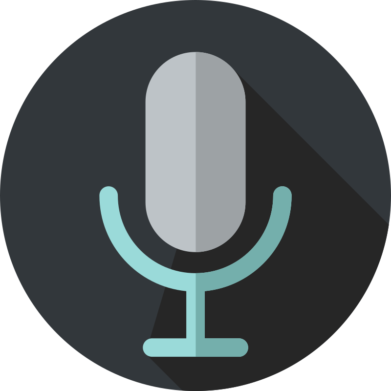

نصائح سريعة
كيف تعتني بصوتك قبل جلسات التسجيل؟
تمارين أساسية للإحماء الصوتي ونظام غذائي بسيط يحمي حبالك الصوتية من الإجهاد أثناء العمل.
اقرأ المزيدPreparing Your Voice Journey...
ابدأ رحلتك في التعليق الصوتي من الصفر مع تدريب عملي يمنحك تصوراً واضحاً عن هذا المجال وكيف تبدأ بالطريقة الصحيحة.

احجز مقعدك الآن قبل انطلاق الورشة الحصرية عبر الإنترنت
انضم إلينا في بث مباشر عبر Google Meet يتعرف فيه المشاركون على أسرار التعليق الصوتي، إدارة الطبقات، وكيفية بناء أول ديمو صوتي احترافي.
استعرض ملخصات وتسجيلات النسخ السابقة من ورشات ECHZON للتعليق الصوتي
ورشة تفاعلية استعرضنا فيها كيفية إزالة الضوضاء وضبط مخارج الصوت عبر برامج المونتاج.
جلسة تطبيقية حول كيفية قراءة النص الإعلاني بطريقة حماسية وإقناعية للعملاء.
متدرب
سنوات خبرة
مجانية
Google Meet
أعمال صوتية تستعرض أنماط إعلانية متنوعة
إعلانات سعودية حماسية
لن نكتفي بالحديث عن التعليق الصوتي، بل سنرسم لك الطريق الذي يبدأ منه كل معلق صوتي محترف.
ستعرف كيف تبدأ، وما الذي يجب تعلمه أولاً، وما الذي يمكن تأجيله.
كل ما ستسمعه مبني على تجربة حقيقية داخل سوق العمل.
ستحصل على فرصة لطرح أسئلتك والحصول على إجابات واضحة.
ستخرج بخطوات عملية تساعدك على البدء بعد انتهاء الورشة مباشرة.
الثلاثاء 28 يوليو
7:00 مساءً بتوقيت دمشق
Google Meet
مجانية بالكامل
فهم المجال، أنواعه، وكيف يعمل سوق التعليق الصوتي.
الإعلانات، الوثائقيات، الكتب الصوتية، الأخبار، الدبلجة وغيرها.
كيف تبدأ بأقل التكاليف دون شراء معدات لا تحتاجها.
أخطاء يقع فيها معظم المبتدئين وكيف تتجنبها.
تمارين عملية تساعدك على تحسين الأداء بشكل مستمر.
خطوات واضحة للانتقال من التعلم إلى العمل.
إذا لم يسبق لك دخول هذا المجال فستكون هذه أفضل نقطة للانطلاق.
تعلم كيف تجعل صوتك أكثر احترافية في فيديوهاتك ومحتواك.
إذا كنت تبحث عن مهارة جديدة تفتح لك فرص عمل مستقبلية.
تعرّف على أولى الخطوات لدخول سوق العمل في مجال التعليق الصوتي.
استمع إلى انطباعات وآراء من شارك معنا في النسخ السابقة وتغيرت مسيرتهم الصوتية
أمتلك خبرة عملية تتجاوز ست سنوات في مجال التعليق الصوتي، قدّمت خلالها عشرات المشاريع ودربت مئات المتدربين على فهم هذا المجال والدخول إليه بطريقة عملية بعيدًا عن التعقيد.
مجموعة من النصائح العملية لمساعدتك في الاستعداد والانطلاق في عالم التعليق الصوتي
تمارين أساسية للإحماء الصوتي ونظام غذائي بسيط يحمي حبالك الصوتية من الإجهاد أثناء العمل.
اقرأ المزيددليل شامل لاختيار أول ميكروفون وتجهيز عزل صوتي بسيط بأقل التكاليف الممكنة.
اقرأ المزيدخطوات اختيار النصوص المناسبة، مدة العينة الاحترافية، وكيفية تقديمها للشركات.
اقرأ المزيدمعلق صوتي محترف وخبير في هندسة الصوت، نسعى لتمكينك من دخول عالم التعليق الصوتي باحترافية
بخبرة واسعة في تنفيذ مئات المشاريع الإعلانية والوثائقية والرد الآلي، يمكنك الاطلاع على تقييمات العملاء وأعمالنا السابقة عبر منصات العمل الحر المعتمدة:
نعم، الورشة مجانية بالكامل، ولا يوجد أي رسوم للتسجيل أو الحضور.
لا، الورشة مناسبة للمبتدئين، وستبدأ من الأساسيات حتى تتكون لديك صورة واضحة عن المجال.
بعد تعبئة نموذج التسجيل، سيتم إرسال رابط الانضمام إلى Google Meet قبل موعد الورشة.
بالتأكيد، سيكون هناك وقت مخصص للإجابة عن الأسئلة والاستفسارات.
احجز مقعدك الآن، وانضم إلى ورشة مجانية تمنحك تصورًا عمليًا عن المجال وكيف تبدأ فيه بطريقة صحيحة.
احجز مقعدك مجانًا